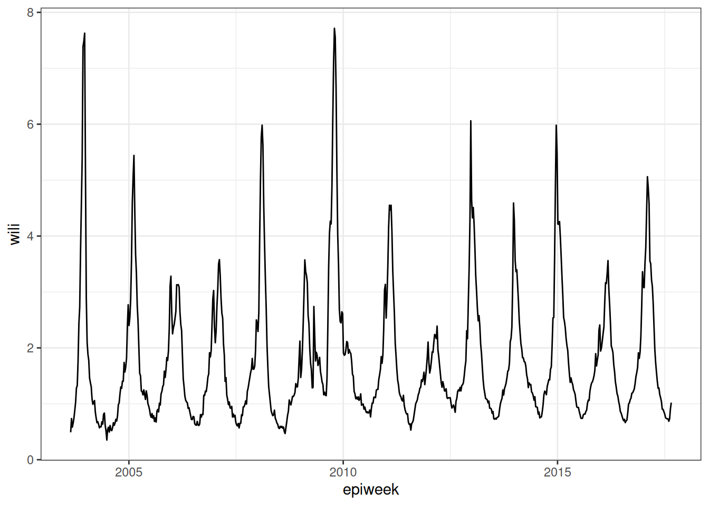
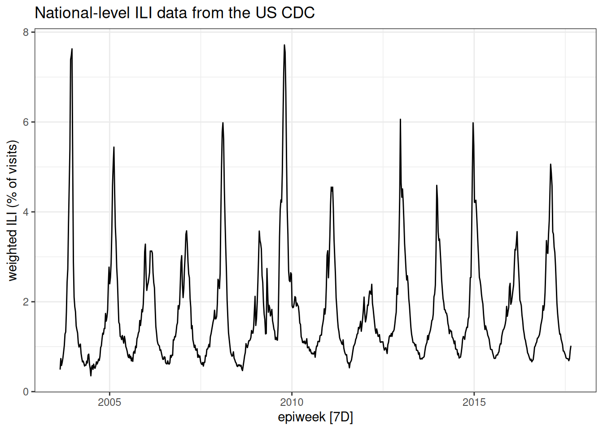
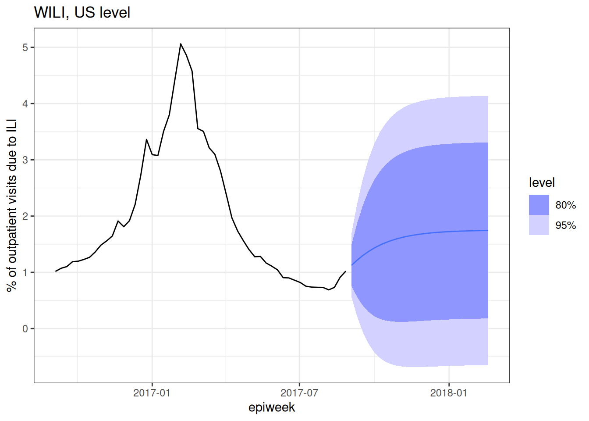

library("nfidd")
library("dplyr")
library("ggplot2")
library("epidatr")
library("feasts")
library("fable")
theme_set(theme_bw())Forecasting concepts
Introduction
Epidemiological forecasts are statements about what might happen to population disease burden in the future. These statements sometimes will be a simple point estimate. Other times, they might be probabilistic, meaning they are making an explicit statistical statement about the probabilities of different future outcomes. In this session we will make some simple forecasts using a decades-old statistical modeling approach, Auto-Regressive Integrated Moving Average (ARIMA), which has also shown itself to be a very capable framework for making predictions of infectious diseases. We will see how we can visualise and interpret such forecasts.
Slides
Objectives
The aim of this session is to introduce the concept of forecasting and forecast visualisation using a simple model.
Setup
Source file
The source file of this session is located at sessions/forecast-concepts.qmd.
Libraries used
In this session we will use the fable package for fitting simple forecasting models, the dplyr package for data wrangling, the ggplot2 library for plotting and the epidatr package for accessing and downloading versions of epidemiological surveillance data from the Delphi EpiData API.
Tip
The best way to interact with the material is via the Visual Editor of RStudio.
Initialisation
We set a random seed for reproducibility. Setting this ensures that you should get exactly the same results on your computer as we do. This is not strictly necessary but will help us talk about the models.
set.seed(17)What is forecasting?
Forecasting is the process of making predictions about the future based on past and present data. In the context of infectious disease epidemiology, forecasting is usually the process of predicting the future course of some metric of infectious disease incidence or prevalence based on data available at the present time. In this session we focus on forecasting one particular outcome for influenza surveillance but forecasts can also be made for other quantities of interest such as the number of infections, the reproduction number, or the number of deaths. Epidemiological forecasting is closely related to nowcasting and, when using mechanistic approaches, estimation of the reproduction number.
In previous sessions, the focus was on a setting where only limited data from a single outbreak was available. Starting with this session, we will focus on a setting where you have multiple prior “seasons” of data to model. This introduces new and different opportunities and complexities for modeling.
Getting acquainted with ILI
Influenza-like illness (ILI) is a commonly used epidemiological surveillance measure for tracking the influenza season. An individual is classified as having ILI if they have a fever AND an additional “flu-like” symptom, such as a cough, headache, sore throat, etc… In the US, ILI data has been collected in a more or less consistent way for over 20 years at the national and state level. These data, including versions available at specific times, are available through the Delphi EpiData API. Specifically, the ILI signal that is published by the CDC measures the percentage of all outpatient doctor’s office visits due to ILI in a given epidemiological week.
The following code downloads ILI data for the USA for all weeks starting with the 2003/2004 season through the start of the 2017/2018 season (epiweek 35 of 2017). Specifically, we use the weighted ILI variable (wili) which uses population-based weights estimate to try to generate a representative estimate of ILI for a specific population. We filter to only include columns that we need and convert the resulting object into a tsibble which is a special kind of time-series data frame. Here is code to query the data from the Delphi EpiData API.
flu_data <- epidatr::pub_fluview(regions = "nat",
epiweeks = epirange(200335, 201735)) |>
select(region, epiweek, wili) |>
as_tsibble(index = epiweek, key = region)However, to ensure reproducibility (since this is a live dataset), we have downloaded this object for you already as of July 10, 2025, and it is available to load from the course R package directly. Further, we filter the data to the start of the 2017/2018 season for this session. This way we have some “unseen” data left for evaluation later.
data(flu_data)
flu_data <- flu_data |>
filter(epiweek <= "2017-08-27") # Filter to start of 2017/2018 season
What is an epiweek?
Measuring time is complicated. Epiweeks are a common unit of time in epidemiological surveillance data. Also referred to as MMWR weeks, an epiweek starts on a Sunday and ends on a Saturday. Most years have 52 epiweeks. Some have 53. Week 1 of a specific year is the first week of the calendar year that has at least four days in it.
In this particular dataset, epidatr labels a week with the date of the first Sunday in that week.
Look at the data
Here are the first 10 rows of the dataset.
flu_data# A tsibble: 732 x 3 [7D]
# Key: region [1]
region epiweek wili
<chr> <date> <dbl>
1 nat 2003-08-24 0.490
2 nat 2003-08-31 0.736
3 nat 2003-09-07 0.582
4 nat 2003-09-14 0.654
5 nat 2003-09-21 0.750
6 nat 2003-09-28 0.884
7 nat 2003-10-05 1.03
8 nat 2003-10-12 1.28
9 nat 2003-10-19 1.33
10 nat 2003-10-26 1.77
# ℹ 722 more rowsAnd here is a simple ggplot-style figure of the data.
ggplot(flu_data) +
geom_path(aes(x=epiweek, y=wili))
But note that one of the advantages of using tsibbles is that there are some default time-series plots that can be made:
autoplot(flu_data, .vars = wili) +
labs(title = "National-level ILI data from the US CDC",
y = "weighted ILI (% of visits)")
Take 5 minutes
Look at the plot of data carefully. Write down at least three observations about the data. Share notes with your neighbor. What features of this time-series make it easier or harder to predict?
Fitting a simple forecasting model
To start with, we are going to use the fable package to build some simple forecasting models.
Picking a modeling framework
There are lots of ways that you might want to consider building your own forecasting models in R. For example, the epipredict package (modular forecasting designed by epidemiological forecasters), the modeltime R package, and the timetk R package would all be reasonable places to start learning about working with time series data with a predictive lens. We are going to work with the fable package because it is actively developed, fairly mature, and makes it very easy to get up and running with some good, simple working examples.
However, in our own research, we have found that often fable models don’t provide enough flexibility or complexity to capture all the features that we want. So, depending how far down this forecasting rabbit hole we are able to pull you, you may end up wanting to play around with more flexible tools like epipredict, or even “rolling your own” models using whatever software you are familiar with.
The fable package has a number of common forecasting models ready for you to use. In this session we’re just going to try one without thinking too much about what it is and why it might be good or bad. We’re going to start with an Auto-Regressive Integrated Moving Average (ARIMA) model. Some of the core ideas of ARIMA models have been in use for 100 years, although they have been around in their current form for the last 50.(Tsay 2000) We recommend the FPP3 ARIMA Chapter as a good applied introduction to ARIMA modeling.
We will talk more about ARIMA models in the next session. For now, think about it as, a linear regression model where the predictor variables are just the last \(p\) values of the time-series, where in this case \(p=2\): \[ y_t = \mu_t + \phi_1 y_{t-1} + \phi_2 y_{t-2} + \varepsilon_t.\] Also, \(\mu_t\) is a constant (like an intercept term in the regression), \(\phi_1\) and \(\phi_2\) are coefficients for the predictors, and \(\varepsilon_t\) is a random error term with mean zero and constant variance.
Here is code that fits models parameters based on all of the data that is passed to it, that is, all of the observations in flu_data.
fit <- flu_data |>
model( arima200 = ARIMA(wili ~ pdq(2,0,0)) )As with other regression models in R, you can inspect some details about the fit, like what the coefficients are estimated to be:
report(fit)Series: wili
Model: ARIMA(2,0,0) w/ mean
Coefficients:
ar1 ar2 constant
1.4733 -0.5341 0.1065
s.e. 0.0312 0.0312 0.0105
sigma^2 estimated as 0.0828: log likelihood=-126.94
AIC=261.88 AICc=261.94 BIC=280.27And now that we’ve fitted a model, we can use it to make a forecast. We’ll start by making a forecast for h=25 weeks into the future. (Although usually for epidemiological forecasts, this would be a bit further than most models could make accurate or well-calibrated forecasts.) The following call to forecast() makes a prediction that starts from the end of the observed flu_data time-series.
first_forecast <- forecast(fit, h = 25)
first_forecast |>
autoplot(flu_data |> filter(epiweek >= as.Date("2016-09-01"))) +
labs(title = "WILI, US level",
y = "% of outpatient visits due to ILI")
Note that in the above plot we filtered the observed data so that the resulting plot wasn’t dominated by all of the historical seasons of data. The plot shows just last season’s observations and “forecasts” for 25 weeks of the 2017/2018 season. Note that the predictions are probabilistic in that they show a predicted mean (the solid line) and an 80% and 95% prediction interval.
Tip
Note that in general for predictive models you want to make sure that your model gives you a prediction interval and not a confidence interval. A prediction interval should (if your model is well “calibrated” – more on that later) cover the eventual observation with a long-run frequency equal to that of the nominal coverage rate. E.g. If you made 80% prediction intervals for 100 points, the prediction intervals should cover around 80 of the observations. A confidence interval is instead providing you with uncertainty about the mean of the distribution of eventual observations, it is not making a statement about the specific future observation.
Take 5 minutes
Look carefully at the forecast and pick out a few things that don’t look right to you and then a few things that you think seem reasonable.
Solution
There is not exactly a “right” answer here, but a few things that jump out to us are:
- The fact that some of the prediction intervals have negative values. The percent of outpatient visits due to ILI cannot be negative! That doesn’t pass the sniff test.
- The mean predictions go up and then level off. There is no notion of a “seasonal peak” in the forecast.
- The uncertainty grows for a few horizons and then stays constant.
This is a pretty bad forecast, but here are a few features of the forecast that pass the sniff test:
- For the first few horizons, the uncertainty gets wider.
- For the first few horizons, the predictions go up, which tracks with the recent data trends, and what we might expect from flu season in the early fall.
- The mean predictions and prediction intervals are smooth. Unless there is good reason for forecasts to be jagged, it tends to be the sign of a model that has not been overfit to have smooth-ish predictions. (Of course, it might still be a bad forecast.)
Can you brainstorm some ideas to help this model improve? This will be the topic of the upcoming sessions.
Anatomy of a fable forecast
We will dive into this in more detail later in the course, but it might be interesting now to look under the hood of what format fable uses to store the forecast itself. Check it out:
class(first_forecast)[1] "fbl_ts" "tbl_ts" "tbl_df" "tbl" "data.frame"first_forecast# A fable: 25 x 5 [7D]
# Key: region, .model [1]
region .model epiweek wili .mean
<chr> <chr> <date> <dist> <dbl>
1 nat arima2… 2017-09-03 N(1.1, 0.083) 1.12
2 nat arima2… 2017-09-10 N(1.2, 0.26) 1.22
3 nat arima2… 2017-09-17 N(1.3, 0.48) 1.30
4 nat arima2… 2017-09-24 N(1.4, 0.7) 1.37
5 nat arima2… 2017-10-01 N(1.4, 0.89) 1.43
6 nat arima2… 2017-10-08 N(1.5, 1) 1.48
7 nat arima2… 2017-10-15 N(1.5, 1.2) 1.53
8 nat arima2… 2017-10-22 N(1.6, 1.3) 1.57
9 nat arima2… 2017-10-29 N(1.6, 1.3) 1.60
10 nat arima2… 2017-11-05 N(1.6, 1.4) 1.62
# ℹ 15 more rowsThe first_forecast object is fbl_ts which is a special kind of tsibble, which is in turn a special kind of data.frame. In this case, each horizon for which we’ve asked for a prediction has a row in the dataset. There is a .mean column where you can quickly see the predicted mean, and a wili column which contains values of class dist. Each of these represent the Normal distribution representing the predictive distribution for the WILI value at that horizon.
Take 2 minutes
What mean value do you think the forecast would settle at if we predicted out for a hundred weeks or more?
Solution
Here is the prediction for h=25.
first_forecast[25,]# A fable: 1 x 5 [7D]
# Key: region, .model [1]
region .model epiweek wili .mean
<chr> <chr> <date> <dist> <dbl>
1 nat arima200 2018-02-18 N(1.7, 1.5) 1.74Here is the overall mean of the dataset the model was fit to:
mean(flu_data$wili)[1] 1.77135ARIMA models that meet certain regularity conditions will have forecasts that converge to the mean of the dataset.
Wrap up
- Review what you’ve learned in this session with the learning objectives
- Share your questions and thoughts
References
Tsay, Ruey S. 2000. “Time Series and Forecasting: Brief History and Future Research.” Journal of the American Statistical Association 95 (450): 638–43.